SHADOWSTEP 是一款印在名片上的小模型對戰遊戲。用一盞燈照亮桌面，兩人輪流移動自己的模型，只要底座踩到對手的影子就獲勝。但走出場地、或撞上對手，就輸了。
準備物品
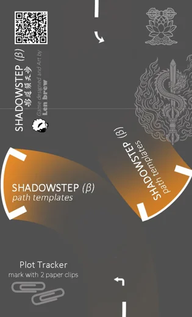
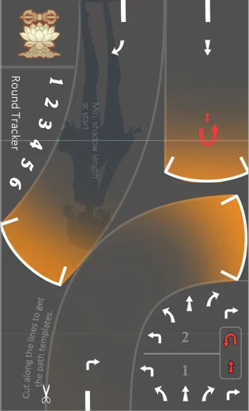
這張名片就是整套遊戲：正反兩面印好所有模板與道具，沿線剪下即可。
- 每人 1 張遊戲名片，沿線剪下
- 每人 2 枚迴紋針（規劃用），另外 1 枚夾在回合紀錄片上
- 每人 1 隻小模型（不太誇張的大小即可），在底座上用麥克筆或貼紙標出前、後標記
- 一個能照出清楚、銳利影子的光源，例如手機手電筒或檯燈
- 一塊 30 × 30 cm 的平面
從名片剪下的零件
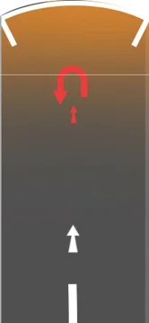
直線模板愚直
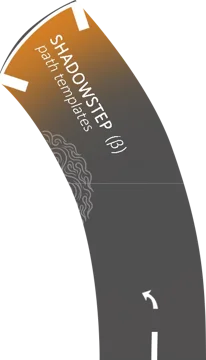
45° 彎道柳
翻面＝反方向
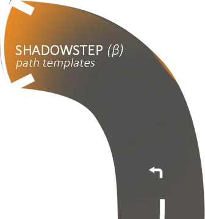
90° 轉彎曲尺
翻面＝反方向
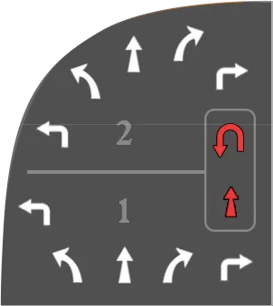
規劃版Plot Tracker
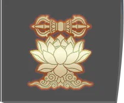
不動標記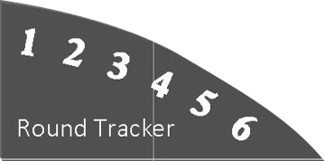
回合紀錄片全場只需 1 片
場地設置
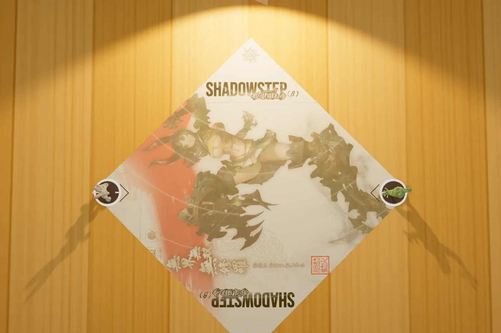
- 把 30×30cm 的場地斜放成菱形。
- 光源放在其中一個角（光座）的外側，從斜上方照向場地。
- 兩隻模型放在燈兩側的兩個角（阿座・吽座，彼此相對），底座整個在場內並緊靠角落。面向自由決定，建議在朝向場地中央的左右 90° 以內。（彼此相對），底座整個在場內並緊靠角落。面向自由決定，建議在朝向場地中央的左右 90° 以內。
- 調整光源，讓兩隻模型開局的影子都清楚，而且至少 6.5cm。
- 每人把「不動」標記彩色面朝上，放在面前；回合紀錄片的迴紋針夾在「1」。
- 用任意方式決定起始玩家，他拿著回合紀錄片，第 1 回合先手。
回合流程 最多 6 回合
① 決定先手
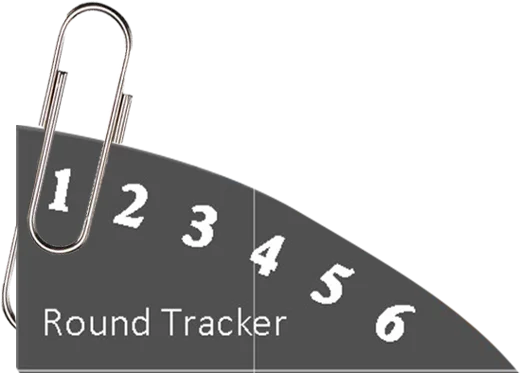
先手拿著回合紀錄片，迴紋針夾在目前的回合數字上，每回合開始時往下一格移動（圖為第 1 回合）。
從第 2 回合開始，模型離光源比較近的人是先手，拿走回合紀錄片。無法判斷誰比較近時，先手換人。
② 秘密規劃
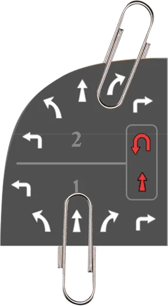
雙方用手遮住，各用 2 枚迴紋針在規劃版上選好兩步：
- 下半「1」：把迴紋針夾在第 1 步想走的箭頭上
- 上半「2」：把迴紋針夾在第 2 步想走的箭頭上
- 可選：直線、左／右 45°、左／右 90°，或迴轉（第 1 步夾紅色直線、第 2 步夾紅色 U 形）
圖例：第 1 步直線、第 2 步右 45°。
迴轉只能選在第 2 步，而且第 1 步必須是直線：第 1 步直線前進，第 2 步轉向 180°（做法見「怎麼移動」）。
③ 同時公開
雙方同時亮出規劃。之後移動時，你可以參考對手的兩步來決定自己的落點。
④ 交錯執行
先手 第1步→後手 第1步→先手 第2步→後手 第2步
每走完一步，立刻針對移動的人做判定。
怎麼移動
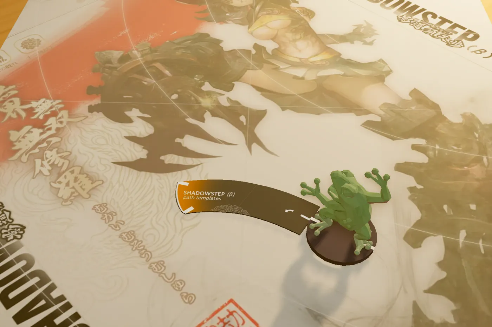
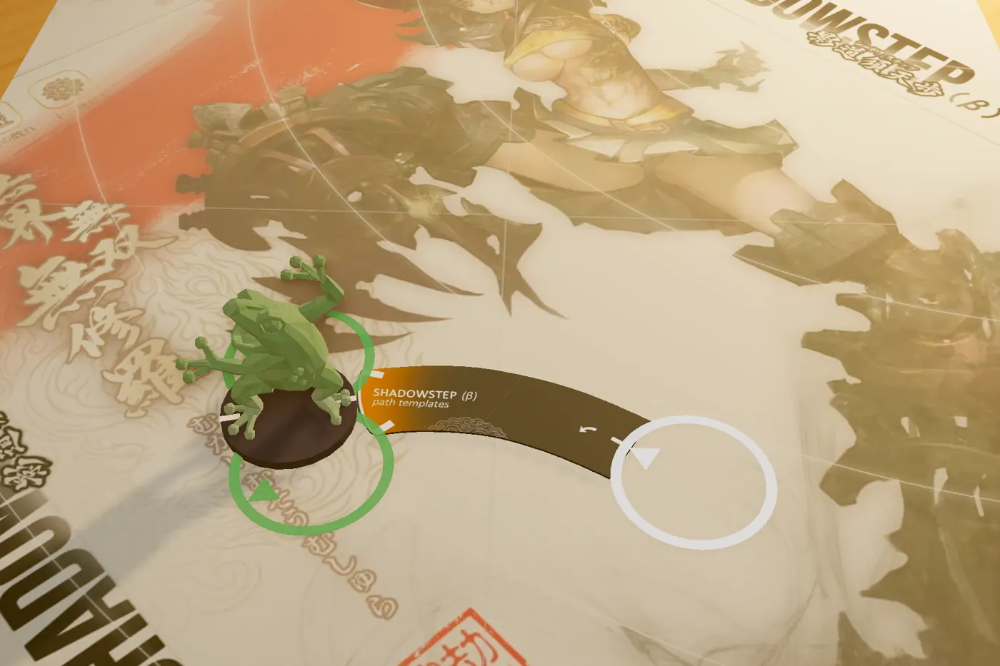
- 模板的起點貼著底座，起點標記對準模型的前標記。
- 把模型拿起來移到模板另一端，讓後標記接到終點。所有模板的終點都是弧形：可以接在弧線上的任何位置，前後標記的連線要垂直於弧線。
- 模型的面向跟著終點改變，然後拿走模板。
- 迴轉的第 2 步：拿任意一片模板，起點對準模型的後標記放好；把模型拿起來，讓前標記對準模板的起點放回去。這樣模型就會準確轉向 180°。
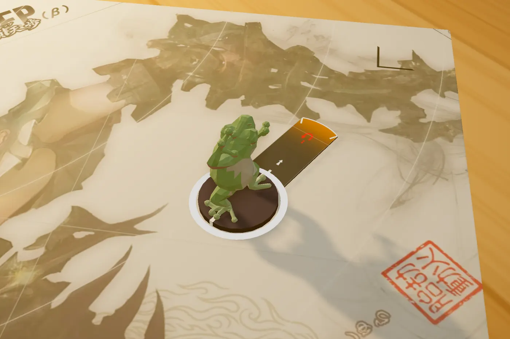
不能預先量測：模板只有在執行移動時才能放到場上，規劃時不能拿模板在場上比劃。模板一放下，就必須完成這一步。
判定
每走完一步，只判定正在移動的人，而且只看這一步結束時的樣子（移動途中經過哪裡都不算）。依序檢查：
1出界：底座有任何部分超出場地 → 移動的人輸
2碰撞：你的模型（任何部分，包含伸出底座的部分）碰到對手的模型，或你的模板碰到對手的底座 → 移動的人輸
3踩影子：底座踩到對手的影子 → 移動的人贏！
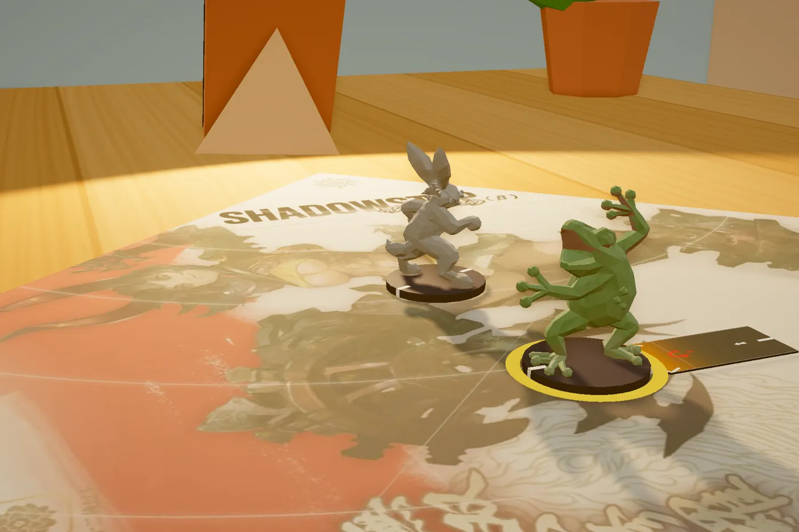
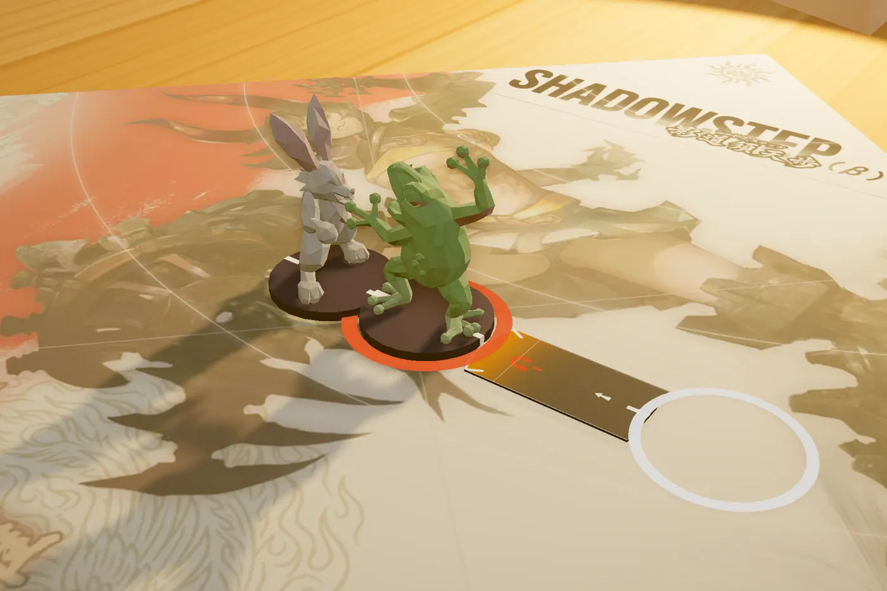
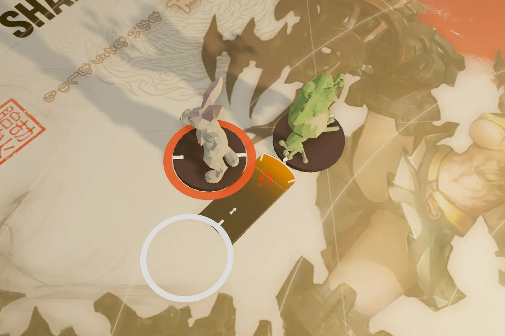
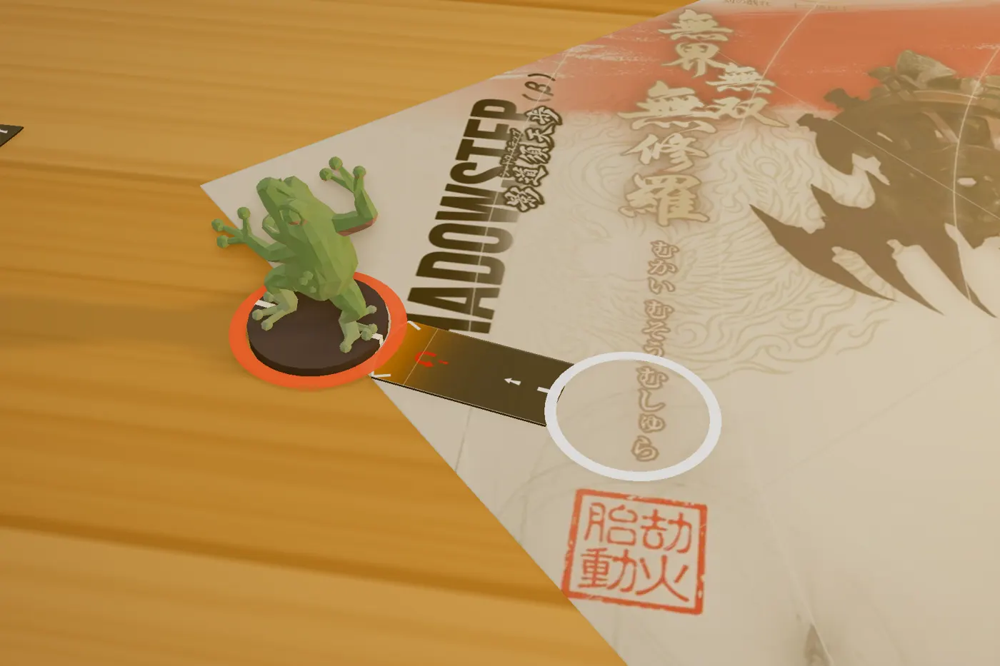
補充
- 自己的影子被移到對手的底座下，不算輸。只有主動踩上去才算。
- 模板只看對手的底座：模板從對手模型伸出的部分下方經過，不算碰撞。
- 踩影子只看底座。
- 迴轉的第 2 步（轉向 180°）只判定碰撞：轉完後模型碰到對手的模型才算輸。轉向時用的模板只是讓模型停在原地的工具，碰到對手的底座不算。
- 判定有疑問時，從正上方看。
不動 一場一次
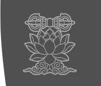
輪到你執行某一步時，可以宣告「不動」，取消這一步：模型留在原地，把不動標記翻到灰色面。
- 只能取消自己的步，可以用在任何一步。
- 必須在放下模板之前宣告。
- 被取消的移動仍算你的這一步，行動順序不變，而且不做任何判定（所以這一步不能踩影子獲勝）。
- 迴轉的直線被取消時，第 2 步的轉向 180° 仍照常執行。
勝負
- 任何一步中：踩到對手的影子就贏；出界或碰撞就輸。
- 6 回合結束還沒分出勝負：模型離光源比較近的人獲勝（從底座中心量到光源正下方）。
- 距離相同時，「不動」還沒用掉的人獲勝；都還在或都用掉時，平手。